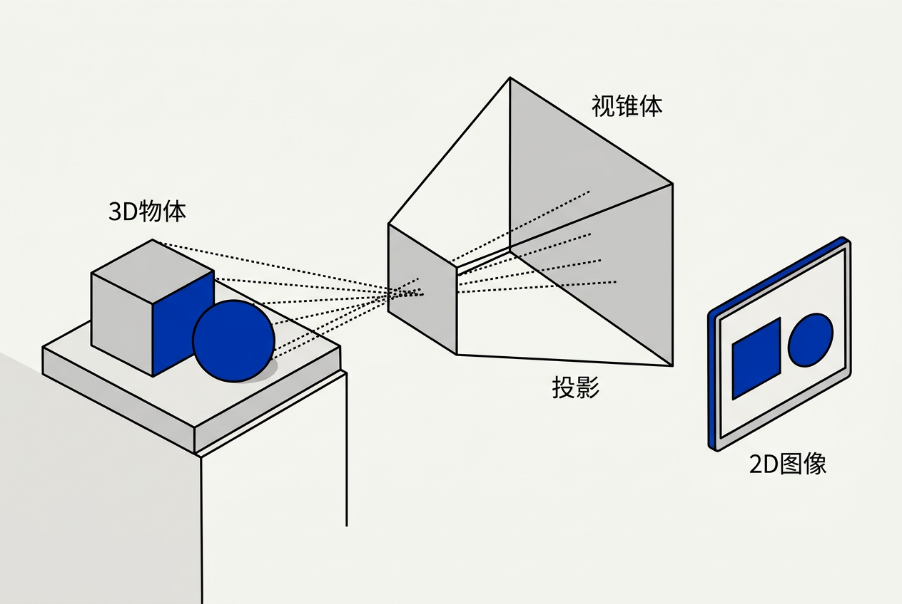
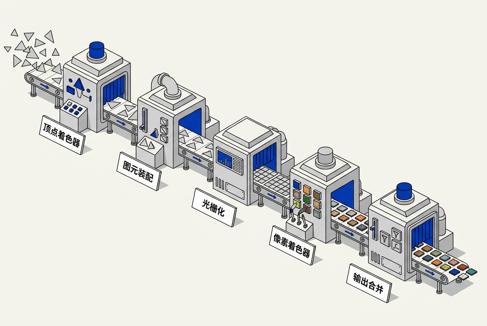
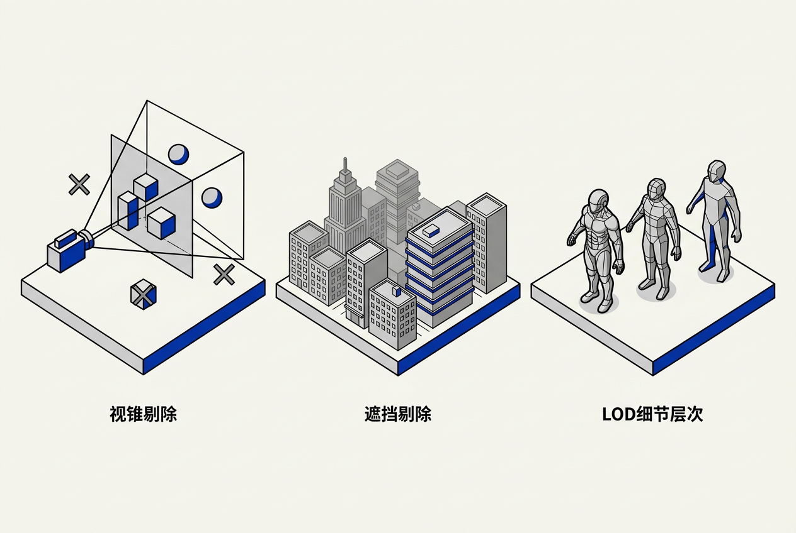

第11章：渲染引擎 — 零基础讲义
讲义说明
本讲义基于 Jason Gregory 所著《Game Engine Architecture Volume II》第4版第11章（Rendering, p.1-135），逐节翻译推导。渲染引擎是游戏引擎中体量最大、技术迭代最快的子系统——本章从零开始带你理解"3D模型怎么变成屏幕上的像素"的全过程。
本版插画由 ImageGen + Guizang 材质插画标准流程生成。
学习目标
- 理解"渲染问题"的本质——将3D场景描述转换为2D像素数组
- 掌握渲染管线五大阶段的流程和数据流动
- 理解顶点缓冲区、索引缓冲区、纹理、材质的基本概念
- 了解可见性判断的三大技术（视锥剔除/遮挡剔除/LOD）
- 掌握应用层如何管理渲染状态和绘制调用提交
- 建立"渲染 = 数据泵 + 数学变换 + 像素着色"的宏观认知
11.1 渲染问题
11.1.1 渲染的本质
11.1.1.1 从三个角度理解渲染
Gregory 从三个互补的角度定义渲染问题：
| 视角 | 输入 | 输出 | 类比 |
|---|---|---|---|
| 数据转换 | 场景元素的数学模型 | W×H 像素颜色数组 | 把数学描述翻译成颜色 |
| 几何投影 | 三维空间的三角形顶点 | 屏幕上的二维位置+深度 | 把三维世界"压平"到屏幕上 |
| 可见性+着色 | 场景+灯光+相机 | 每个像素的颜色（考虑遮挡和光照） | "谁在前面看到谁"+"该是什么颜色" |
11.1.1.2 实时渲染的苛刻约束
电影渲染一帧可以花数分钟到数小时。游戏引擎必须在16.7ms（60fps）内完成一帧的全部渲染工作——这还只是渲染，不包括物理、AI、动画、音频等子系统的时间。渲染引擎的使命就是在这极短的时间预算内，尽可能逼近照片级画质。
11.1.2 光栅化 vs 光线追踪
11.1.2.1 两种渲染范式的核心差异
| 光栅化（Rasterization） | 光线追踪（Ray Tracing） | |
|---|---|---|
| 思路 | 把三角形投影到屏幕 → 填色 | 从眼睛出发发射线 → 碰撞检测 |
| 类比 | "站在物体这边往屏幕拍" | "站在眼睛这边往世界看" |
| 速度 | 极快（GPU 硬件优化 20+ 年） | 慢但越来越快（RTX 加速） |
| 反射/折射 | 需要额外技巧（Cube Map / SSR） | 天然支持（射线弹射） |
| 软阴影 | 需要 Shadow Map + 滤波 | 天然支持（面积光→半影） |
| 当前游戏用途 | 主力渲染管线（99% 的三角形） | 混合使用：反射/阴影/AO |
11.1.2.2 混合渲染是当下主流
现代 3A 游戏不是"选光栅化还是光线追踪"——而是两者都用。光栅化处理主渲染（因为它快），光线追踪叠加到上次级效果（反射、环境光遮蔽、阴影精化）。Unreal Engine 5 的 Lumen 就是这种混合方案的代表。
11.2 灯光、相机、动作！

11.2.1 虚拟相机
11.2.1.1 与真实相机的类比
生活类比： 虚拟相机就像一个拍电影的摄影机——它有位置（你站在哪）、朝向（你往哪看）、镜头（广角还是长焦）。它"看到"的3D场景被"拍成"一张2D照片，这就是你屏幕上的画面。
11.2.1.2 视锥体（View Frustum）
相机不是"看到整个世界"，而是看到一个截锥体（四棱台）形状的空间。只有落在这个锥体内的物体才需要渲染——锥体外的物体被视锥剔除（Frustum Culling）。视锥体由六个平面围成：上下左右四个斜面 + 近裁剪面 + 远裁剪面。
// 相机参数决定视锥体
struct Camera {
Vector3 position; // 相机位置（眼睛在哪）
Vector3 lookAt; // 看向哪（注视点）
float fovY; // 垂直视野角度（60°=标准, 90°=鱼眼）
float nearPlane; // 近裁剪面距离（太近的不渲染，如 0.1m）
float farPlane; // 远裁剪面距离（太远的不渲染，如 1000m）
float aspectRatio; // 宽高比（16:9 = 1.778）
};
// 视锥体的六个平面方程
// 判断：点是否在六个平面的"内侧"？是 → 在视锥体内 → 需要渲染11.2.2 场景元素
11.2.2.1 网格（Mesh）— 几何形状
3D 物体的几何形状由三角形网格表示。一个角色模型可能有几万个三角形，一棵远处的树可能只用几百个。
// 三角形 = 3个顶点
struct Vertex {
Vector3 position; // 三维位置 (x, y, z)
Vector3 normal; // 法线方向（这个点"朝哪"）
Vector2 texCoord; // 纹理坐标（贴图的"哪个位置"）
// 可能还有：颜色、切线、副法线、骨骼权重 ...
};
// 网格 = 顶点数组 + 索引数组（三角形列表）
struct Mesh {
Vertex* vertices; // 所有顶点
uint32_t vertexCount; // 顶点数
uint32_t* indices; // 三角形索引（每3个索引=1个三角形）
uint32_t indexCount; // 索引数
}11.2.2.2 纹理（Texture）— 表面细节
纹理是贴到三角形表面的二维图片。每个顶点的 texCoord（纹理坐标，通常记为 uv）告诉 GPU "这个顶点对应图片上的哪个像素"。GPU 在三角形内部自动插值 uv，把图片"拉伸包裹"到表面上。
11.2.2.3 材质（Material）— 外观定义
材质定义了"这个表面看起来是什么样的"：它用了哪些纹理（漫反射/法线/金属度/粗糙度）、反光特性、自发光颜色、透明度。材质 + 纹理 + 着色器 = 物体最终的外观。
11.2.3 光源
11.2.3.1 常见光源类型
| 类型 | 描述 | 游戏应用 |
|---|---|---|
| 方向光（Directional） | 来自无限远处的平行光 | 太阳 |
| 点光源（Point） | 从一点向全方向辐射 | 灯泡、火把、枪口闪光 |
| 聚光灯（Spot） | 从一点向锥形范围辐射 | 手电筒、舞台追光灯 |
| 面光源（Area） | 从一块发光表面辐射 | 灯管、电视屏幕 |
| 环境光（Ambient） | 间接反弹光（天空散射） | 没有直射光也不会全黑 |
因为真实光源（太阳虽远但不是无限小的点；灯泡有灯罩面积）是面光源——它从不同角度投射光线，产生半影区（软边缘）。简单游戏用点光源+Shadow Map近似，产生的是全影区（硬边缘）。高质量的软阴影需要计算面光源的可见性积分——这在实时渲染中是昂贵操作，需要光线追踪或高级Shadow Map滤波技术。
11.3 3D渲染基础

11.3.1 渲染管线总览
11.3.1.1 五大阶段的流水线
生活类比： 渲染管线就像一条汽车工厂流水线——每个工位只做一件事，铁板从左到右流动，最终变成一辆完整的汽车。数据（三角形）从左边流入，在每个工位（着色器）被加工，右边流出的是像素颜色。
// 渲染管线的数据流
[三角形顶点数据]
↓ ① 顶点着色器（Vertex Shader）
[变换后的顶点 + 顶点属性]
↓ ② 图元装配（Primitive Assembly）
[组装好的三角形 + 裁剪后的结果]
↓ ③ 光栅化（Rasterization）
[屏幕上的像素碎片（Fragment）]
↓ ④ 像素/片元着色器（Pixel / Fragment Shader）
[每个像素的颜色值]
↓ ⑤ 输出合并（Output Merger / ROP）
[最终写入帧缓冲的像素（经过深度/模板测试+混合）]11.3.2 阶段详解
11.3.2.1 ① 顶点着色器——把3D点变换到屏幕空间
每个顶点独立进入顶点着色器，执行一次。最常见的操作是MVP变换：将局部坐标乘以 World×View×Projection 三个矩阵，得到屏幕空间坐标。
// 一个简单的顶点着色器（HLSL/GLSL 伪代码）
VSOutput VertexShader(VSInput input) {
VSOutput output;
// MVP 变换：局部坐标 → 世界 → 相机 → 裁剪空间
float4 worldPos = mul(worldMatrix, float4(input.position, 1.0));
float4 viewPos = mul(viewMatrix, worldPos);
output.clipPos = mul(projMatrix, viewPos); // 最重要的输出！
output.texCoord = input.texCoord; // 把纹理坐标传给像素着色器
output.normal = mul((float3x3)worldMatrix, input.normal);
return output;
}11.3.2.2 ② 图元装配——把三个顶点拼成三角形
GPU 取三个顶点的输出数据，组装成一个三角形。然后进行裁剪——如果三角形的一部分超出了屏幕，GPU 会把它切成刚好在屏幕内的形状（生成新的小三角形）。完全在屏幕外的三角形被丢弃。
11.3.2.3 ③ 光栅化——把三角形"像素化"
光栅化器确定"这个三角形覆盖了屏幕上的哪些像素"。对每个被覆盖的像素，生成一个片元（Fragment）——包含该像素位置 + 从三个顶点插值出来的所有属性（颜色/法线/纹理坐标/深度）。
// 光栅化做的事（简化伪代码）
for (int y = tri.minY; y <= tri.maxY; y++) {
for (int x = tri.minX; x <= tri.maxX; x++) {
if (PointInTriangle(x, y, tri)) {
float3 bary = CalcBarycentric(x, y, tri); // 重心坐标
Fragment frag;
frag.color = bary.x*v0.color + bary.y*v1.color + bary.z*v2.color;
frag.texCoord = bary.x*v0.uv + bary.y*v1.uv + bary.z*v2.uv;
frag.depth = bary.x*v0.pos.z + bary.y*v1.pos.z + bary.z*v2.pos.z;
ProcessFragment(frag); // 发给像素着色器
}
}
}11.3.2.4 ④ 像素着色器——决定每个像素的颜色
每个片元独立运行一次像素着色器。这是渲染管线中最耗时的阶段——屏幕上有 1920×1080 ≈ 207万个像素，每个过绘制像素都要跑一遍像素着色器。
// 一个简单的像素着色器
float4 PixelShader(PSInput input) : SV_Target {
// 从纹理采样颜色
float4 albedo = diffuseTexture.Sample(sampler, input.texCoord);
// 简单的漫反射光照（点积判断光线方向和法线的夹角）
float NdotL = max(dot(input.normal, lightDir), 0.0);
float3 litColor = albedo.rgb * lightColor * NdotL;
return float4(litColor, albedo.a);
}11.3.2.5 ⑤ 输出合并——决定像素写入帧缓冲的最终值
每个像素可能被多个三角形覆盖（如透明窗户叠加在建筑上）。输出合并阶段做两件事：深度测试——只保留离相机最近的像素（扔掉被遮挡的）；混合——透明物体的颜色需要和背景颜色按透明度比例混合。
11.3.3 坐标空间变换链
11.3.3.1 一个顶点从模型到屏幕的完整旅程
// 五个坐标空间，四个矩阵
局部空间（Model Space）
↓ × World Matrix
世界空间（World Space）
↓ × View Matrix
相机/观察空间（View Space）
↓ × Projection Matrix
裁剪空间（Clip Space）
↓ ÷ w（透视除法，GPU 自动完成）
标准设备坐标 NDC（归一化到[-1,1]）
↓ Viewport Transform
屏幕空间（Screen Space）→ 最终像素坐标！11.4 可编程图形管线
11.4.1 GPU 硬件架构
11.4.1.1 CPU vs GPU 的根本差异
| CPU | GPU | |
|---|---|---|
| 核数 | 少数大核心（4-16） | 数千个小核心 |
| 擅长 | 复杂分支、顺序逻辑 | 大规模并行数据计算 |
| 单核性能 | 极高（高主频+大缓存） | 中等（但数量碾压） |
| 类比 | 一个博士做复杂推理 | 一万个小学生做简单算术 |
| 代码特点 | if/else 分支密集 | 同样的运算对不同数据（SIMT） |
11.4.1.2 SIMD vs SIMT
SIMD（Single Instruction, Multiple Data）： 一条指令同时处理多个数据（如 SSE 一次加 4 个 float）。SIMT（Single Instruction, Multiple Threads）： GPU 的概念——数千个"线程"同时执行相同的着色器程序，但每个线程处理不同的顶点或像素。如果一些线程走了 if 分支而另一些走了 else——所有线程都要等两个分支都执行完（这叫"线程发散"，性能杀手）。
11.4.2 图形 API
11.4.2.1 主流 API 对比
| API | 平台 | 特点 |
|---|---|---|
| DirectX 12 | Windows / Xbox | 底层显式控制，需要手动管理资源 |
| Vulkan | 跨平台 | 开源，底层显式控制，PS5/Switch/Android |
| Metal | macOS / iOS | Apple 独占，设计优良 |
| OpenGL | 跨平台 | 老牌 API，高层抽象（DX9/10 时代） |
11.4.2.2 显式 API（DX12/Vulkan）的革命
DX11/OpenGL 时代，驱动程序帮你做了很多决策（内存管理、命令缓冲、多线程）。DX12/Vulkan 把这些控制权还给开发者——你需要手动管理 GPU 内存、手动构建命令缓冲、手动处理多线程同步。这是更难的开发体验换来更高的性能。现代 3A 引擎全部转向显式 API。
11.4.3 GPU 内存层级
11.4.3.1 GPU 的内存类型
| 内存类型 | 大小 | 速度 | 用途 |
|---|---|---|---|
| 寄存器（Register File） | 每线程极少 | 最快（0延迟） | 着色器局部变量 |
| 共享内存（Shared / LDS） | 每组 32-64KB | 极快（~30 cycles） | 线程组内数据交换 |
| L1 / L2 Cache | 几MB | 快（~100 cycles） | 纹理/缓冲缓空 |
| 全局显存（VRAM） | 8-24GB | 慢（~500 cycles） | 纹理/网格/缓冲的主存储 |
| 系统内存（RAM） | 16-64GB | 极慢（需 PCIe 传输） | CPU-GPU 数据交换 |
因为带宽。GPU 需要每秒处理数百 GB 的数据（RTX 4090 显存带宽 1TB/s）。通过 PCIe 总线访问系统内存只有约 64GB/s——差了 15 倍。独立显存（GDDR6/GDDR6X）用自己专用总线直连 GPU 核心，带宽极大。这就是为什么 PS5 的统一内存架构（CPU 和 GPU 共享 GDDR6）是主机的一大优势——避免了 CPU↔GPU 数据搬运。
11.5 管线管理：应用层

11.5.1 渲染前的准备工作
11.5.1.1 一帧渲染的应用层工作流
// CPU 端每一帧的渲染管理流程
void RenderFrame() {
// ① 可见性判断——只渲染相机能看到的东西
VisibleSet visibleObjects;
FrustumCull(allObjects, camera, visibleObjects); // 视锥剔除
OcclusionCull(visibleObjects); // 遮挡剔除
// ② 排序——按材质/深度排序减少状态切换
SortByMaterial(visibleObjects.opaqueObjects); // 不透明：前→后
SortByDepth(visibleObjects.transparentObjects); // 透明：后→前
// ③ 状态设置 + 绘制调用提交
for (auto& obj : visibleObjects.opaqueObjects) {
SetPipelineState(obj.material); // 着色器 + 混合模式
SetRootSignature(obj.textures); // 绑定纹理
SetConstantBuffer(obj.worldMatrix); // 设置变换矩阵
DrawIndexed(obj.mesh); // 绘制！
}
// ④ 透明物体后处理（单独 pass）
for (auto& obj : visibleObjects.transparentObjects) {
SetBlendState(AlphaBlend);
DrawIndexed(obj.mesh);
}
}11.5.2 可见性判断
11.5.2.1 视锥剔除（Frustum Culling）
快速测试一个物体的包围盒（AABB 或球）是否和相机视锥体的六个平面相交。不相交 → 物体在屏幕外 → 完全跳过渲染。这是最基础也是最重要的性能优化——典型场景中可剔除 30-50% 的物体。
11.5.2.2 遮挡剔除（Occlusion Culling）
即使物体在视锥体内，如果被前面的物体完全挡住（如一栋楼后面的另一栋楼），也不需要渲染。两种实现方式：① 硬件遮挡查询（用前一帧的深度缓冲测试包围盒）；② 预计算的可见性集（PVS，把空间切成格子，预先算好"在格子A能看到哪些物体"）。室内场景用 PVS 极高效。
11.5.2.3 细节层次（LOD）
远处的物体用低精度版本（几百个三角形），近处的用高精度（几万个三角形）。LOD 切换基于物体到相机的距离。现代引擎（如 UE5 Nanite）将 LOD 做到像素级别——远处的一个三角形可能已经小到只有 1 像素，自动用更低精度的表示。
11.5.3 空间数据结构
11.5.3.1 BSP 树——室内场景之王
BSP（Binary Space Partitioning，二元空间分割）树递归地将空间切成两半。每个节点存储"用哪条线/面切"和"前后子空间"。特别适合室内场景——所有墙面天然是切平面。遍历 BSP 树可以按精确的前→后顺序生成物体列表——这是老式引擎（DOOM、Quake）的核心技术。现代更偏向用 BVH、八叉树和空间哈希。
11.5.3.2 四叉树与八叉树——室外场景的网格化
将 2D 平面递归四等分 = 四叉树（用于地形）。将 3D 空间递归八等分 = 八叉树（用于空间中的物体分布）。查询"相机附近有哪些物体"只需要遍历一小部分节点，而不是遍历全部物体。
11.6 几何处理与视觉效果
11.6.1 几何着色器与曲面细分
11.6.1.1 几何着色器——"凭空创造三角形"
几何着色器运行在图元装配之后，可以接受一个三角形，输出 0 个到多个三角形。用途：粒子系统（从一个点生成一个 Billboard 四边形）、草叶生成、阴影体（Shadow Volume）拉伸。
11.6.1.2 曲面细分——动态增加细节
曲面细分（Tessellation）在 GPU 上动态细分三角形——远处的山只用了 4 个三角形，走到近处自动细分成几千个。不需要存储高精度 Mesh——原始 Mesh 保持低精度，细节在渲染时动态生成。配合位移贴图（Displacement Map）可以产生真实的凹凸地形。
11.6.2 粒子系统
11.6.2.1 粒子的渲染方式
每个粒子是一个始终面朝相机的矩形（Billboard），贴上纹理（火焰/烟雾/火花），在像素着色器中做透明度混合。粒子系统通常用计算着色器或 CPU 更新位置/速度/生命周期，GPU 负责渲染——典型的 GPU 粒子系统可以同时处理数十万粒子。
11.6.3 后处理效果
11.6.3.1 常见的全屏后处理
| 效果 | 原理 |
|---|---|
| 色调映射（Tone Mapping） | 将 HDR 的高动态范围颜色映射到显示器能显示的 LDR |
| 泛光（Bloom） | 提取画面中高亮区域 → 模糊 → 叠加回原图（亮的周围"溢光"） |
| 运动模糊 | 根据上一帧到这一帧的像素移动速度做方向性模糊 |
| 景深（Depth of Field） | 焦外区域模糊——模拟相机镜头的对焦效果 |
| 抗锯齿（AA） | 减少三角形边缘的"锯齿"——TAA（时域）、FXAA（后处理）、MSAA（硬件） |
| SSAO | 屏幕空间环境光遮蔽——角落和缝隙变暗。基于深度缓冲计算 |
11.6.4 调试与开发工具
11.6.4.1 渲染调试的三件套
① 线框模式： 只画三角形边线。② 过度绘制可视化： 亮色=被画了好几次（性能垃圾）。③ 逐 Pass 显示： "只看阴影贴图"、"只看法线"——逐 Pass 隔离调试。
本章核心洞察
渲染引擎的本质就是把三维世界描述精确而高效地转换为二维像素数组。它靠的不是"模拟真实物理"（那太慢了），而是巧妙的近似和优化。GPU 的设计哲学是"大量简单核心并行做相同的事"——这从根本上决定了渲染管线的数据驱动、无分支、高并行的特性。
三条渲染准则：
1. 不要渲染看不见的东西： 视锥剔除 + 遮挡剔除 + LOD = 渲染优化第一步
2. 减少状态切换： 按材质排序比多画几个三角形更重要——状态切换是 GPU 的隐藏杀手
3. 理解你的像素预算： 1920×1080×60fps = 每秒 1.24 亿像素——每个像素只有 4 纳秒的处理时间
📝 课后练习题（含答案）
输入： 场景元素（3D 网格/材质/纹理）+ 光源 + 虚拟相机 + 渲染状态。输出： W×H 像素颜色数组（RGB 或 RGBA），每个像素 24-32 位颜色信息。过程： 利用 GPU 硬件并行处理大量三角形——变换到屏幕空间 → 光栅化成像素碎片 → 着色 → 输出合并。
① 顶点着色器： 将每个顶点的局部坐标变换到裁剪空间（MVP矩阵乘法），输出变换后的位置+属性。② 图元装配： 三个顶点拼成三角形 → 裁剪 → 扔掉屏幕外的。③ 光栅化： 确定三角形覆盖了哪些像素，生成片元（带插值属性）。④ 像素着色器： 每个片元计算最终颜色（纹理采样+光照计算）。⑤ 输出合并： 深度测试（只保留最近的）+ 混合（透明度合成）+ 写入帧缓冲。
光栅化： 三角形 → 投影到屏幕 → 填充像素。优势：极快（GPU硬件原生支持）。劣势：无法天然处理反射/折射。光线追踪： 从眼睛发射线 → 和场景求交 → 找到最近物体 → 计算颜色。优势：反射/折射/软阴影天然支持。劣势：计算量大，需要专用硬件。现代游戏"混合使用"——光栅化主力，光线追踪辅助反射和阴影。
视锥体 = 相机"看到"的截锥形空间区域，由六个平面围成（上下左右+近远）。视锥剔除 = 快速测试物体的包围盒和这六个平面的位置关系：包围盒完全在任何平面外侧 → 物体不在视野中 → 跳过渲染。这是渲染优化的第一步也是最重要的步骤。
CPU：少量大核心（4-16），每个核有分支预测器+大缓存+乱序执行——擅长复杂分支逻辑。GPU：几千个小核心，核心以 warp/wavefront（32-64线程）为单位锁步执行。所有线程必须执行相同的指令——如果一些走 if，一些走 else，硬件必须执行两遍（一遍 if，一遍 else）。这严重浪费计算能力。所以着色器代码要尽量少用分支。
旧API中，驱动程序做决策——内存何时分配/释放、命令何时提交到GPU、多线程是否安全——开发者不控制这些"黑盒"。显式API中：① 你必须手动管理GPU内存分配（决定哪个资源放在显存的哪块区域）。② 你必须手动构建命令缓冲（把你想要GPU执行的命令打包成一个列表）。③ 你必须手动处理多线程同步（fence/barrier/semaphore）。代价是开发复杂度暴增，回报是更可预测的性能、更低的CPU开销、真正的多线程渲染。
因为带宽需求极大。RTX 4090 显存带宽 ≈1TB/s，而 PCIe 4.0×16 ≈32GB/s——差了30倍。GPU 每秒处理数百GB的纹理和顶点数据，通过 PCIe 访问系统内存会是灾难性的瓶颈。GDDR6/GDDR6X 显存通过专用宽总线（384bit+）直连 GPU，才能满足带宽需求。这也是 PS5 统一内存（GDDR6 由 CPU+GPU 共享）的优势——数据不需要在两者之间搬运。
① 色调映射： HDR高范围→显示器LDR，模拟人眼适应。② 泛光（Bloom）： 提取高亮区→高斯模糊→叠加回画面。③ 运动模糊： 根据像素运动矢量做方向性模糊。④ SSAO： 基于深度缓冲计算角落/缝隙的遮蔽度→局部变暗，增加立体感。⑤ TAA 抗锯齿： 用前几帧的像素混合当前帧，消除锯齿和闪烁——现代游戏标配。
🤖 qAagent 零基础问答区
推荐四步学习路径：
① 先理解"渲染就是给三角形涂颜色"——下载 RenderDoc，截一帧游戏画面，看看它由哪些 Draw Call 组成。
② 学会写一个三角——用 LearnOpenGL 或 DirectX 教程，显示一个旋转的彩色三角形。
③ 学会贴纹理+光照——理解 MVP 矩阵、纹理采样、Phong 光照模型。
④ 看懂 GPU 架构——了解 Warp/SIMT、显存层级、Cache。到此你就"入门"了。后续深入学习需要选择方向：PBR物理渲染、光线追踪、粒子系统等。
Shader 是运行在 GPU 上的小程序。之所以叫"着色器"是因为最初的 GPU 程序只能做简单的"着色"（给像素计算颜色）。现代 Shader 早已不限于着色——可以做动画（顶点着色器做骨骼蒙皮）、可以做物理（计算着色器）、甚至可以做 AI 推理（Tensor Core）。但历史名字保留了下来。五种常见 Shader 类型：Vertex / Pixel(Fragment) / Geometry / Compute / Mesh。
Draw Call = CPU 对 GPU 说"请画这个 Mesh，用这个材质，在这个变换下"。每次 Draw Call 有固定的 CPU→GPU 通信开销（DX11 时代约 1-5μs）。如果有 10000 个物体，每个一次 Draw Call = 10-50ms 的纯 CPU 开销——一帧已经没了！"减少 Draw Call"的方法：合批（Batching）——把许多小物体合并到一个大的顶点缓冲中，一次 Draw Call 画完。DX12/Vulkan 的 Draw Call 开销已大幅降低，但合批仍然是重要的优化手段。
深度缓冲是一张和屏幕一样大的灰度图，每个像素存储"离相机最近的物体的距离"。当你画一个三角形时：先检查这片区域的深度缓冲值——如果新像素比已有值近（离相机更近），就写入颜色+更新深度；如果新像素更远，就丢弃（被挡住了）。这就是"不需要对物体排序也能保证远近正确"的机制（但透明物体除外！透明物体必须手动后→前排序，因为需要混合多个层的颜色）。
不透明物体可以用深度缓冲——先画近的后画远的，看到深度更大直接跳过。透明物体需要后→前排序+开启混合——每个透明像素必须和它后面的颜色做透明度加权平均（over operator）。如果三个透明窗户叠在一起，每个像素都要跑三次像素着色器+三次混合运算。而且透明物体无法利用 Early-Z 优化（因为混合需要知道"背后的颜色"，不能提前丢弃）。
现代帧缓冲通常不是一张图，而是多张图（MRT，Multiple Render Targets）：
① 颜色缓冲： 最终画面的 RGB 颜色 + Alpha
② 深度缓冲： 每个像素的深度值（离相机距离）
③ 法线缓冲： 像素对应的表面法线方向（用于 SSAO/SSR）
④ 运动矢量缓冲： 像素在屏幕上的移动速度和方向（用于 TAA/运动模糊）
⑤ 材质 ID 缓冲： 像素属于哪个物体/材质（用于后处理选择性效果）
这就是"延迟渲染"的基础——先在多个缓冲中存储几何信息，再统一做光照计算。
传统 LOD：美术师手动做 3-5 个精度版本的模型（高/中/低/极低），引擎根据距离切换。工作量巨大，且切换时有"跳变"。Nanite： 引擎自动将高精度模型（数百万三角形）聚类成层次化的几何簇。运行时根据"屏幕上每个簇占多少个像素"动态选择精度——远处的一个簇可能只用 1 个三角形表示，近处的用几百个。不需要美术师做 LOD，也不会有切换跳变——因为精度选择是像素级别连续变化的。
三个核心认知：
1. 渲染 = 五阶段流水线（顶点→图元→光栅→像素→合并）——理解这个流就理解了渲染
2. GPU 的哲学是"大量简单核心并行"——着色器代码要少分支、数据要预先组织好
3. 先剔除再渲染（Frustum Cull → Occlusion Cull → LOD）——不要渲染看不见的东西
这三条是面试和工作都会反复用到的核心概念。
- 学习目标
- 学习目标
- 11.1 渲染问题
- 11.1.1 渲染的本质
- 11.1.1.1 从三个角度理解渲染
- 11.1.1.2 实时渲染的苛刻约束
- 11.1.2 光栅化 vs 光线追踪
- 11.1.2.1 两种渲染范式的核心差异
- 11.1.2.2 混合渲染是当下主流
- 11.2 灯光、相机、动作！
- 11.2.1 虚拟相机
- 11.2.1.1 与真实相机的类比
- 11.2.1.2 视锥体（View Frustum）
- 11.2.2 场景元素
- 11.2.2.1 网格（Mesh）— 几何形状
- 11.2.2.2 纹理（Texture）— 表面细节
- 11.2.2.3 材质（Material）— 外观定义
- 11.2.3 光源
- 11.2.3.1 常见光源类型
- 11.3 3D渲染基础
- 11.3.1 渲染管线总览
- 11.3.1.1 五大阶段的流水线
- 11.3.2 阶段详解
- 11.3.2.1 ① 顶点着色器——把3D点变换到屏幕空间
- 11.3.2.2 ② 图元装配——把三个顶点拼成三角形
- 11.3.2.3 ③ 光栅化——把三角形"像素化"
- 11.3.2.4 ④ 像素着色器——决定每个像素的颜色
- 11.3.2.5 ⑤ 输出合并——决定像素写入帧缓冲的最终值
- 11.3.3 坐标空间变换链
- 11.3.3.1 一个顶点从模型到屏幕的完整旅程
- 11.4 可编程图形管线
- 11.4.1 GPU 硬件架构
- 11.4.1.1 CPU vs GPU 的根本差异
- 11.4.1.2 SIMD vs SIMT
- 11.4.2 图形 API
- 11.4.2.1 主流 API 对比
- 11.4.2.2 显式 API（DX12/Vulkan）的革命
- 11.4.3 GPU 内存层级
- 11.4.3.1 GPU 的内存类型
- 11.5 管线管理：应用层
- 11.5.1 渲染前的准备工作
- 11.5.1.1 一帧渲染的应用层工作流
- 11.5.2 可见性判断
- 11.5.2.1 视锥剔除（Frustum Culling）
- 11.5.2.2 遮挡剔除（Occlusion Culling）
- 11.5.2.3 细节层次（LOD）
- 11.5.3 空间数据结构
- 11.5.3.1 BSP 树——室内场景之王
- 11.5.3.2 四叉树与八叉树——室外场景的网格化
- 11.6 几何处理与视觉效果
- 11.6.1 几何着色器与曲面细分
- 11.6.1.1 几何着色器——"凭空创造三角形"
- 11.6.1.2 曲面细分——动态增加细节
- 11.6.2 粒子系统
- 11.6.2.1 粒子的渲染方式
- 11.6.3 后处理效果
- 11.6.3.1 常见的全屏后处理
- 11.6.4 调试与开发工具
- 11.6.4.1 渲染调试的三件套
- 本章核心洞察
- 📝 课后练习题（含答案）
- 🤖 qAagent 零基础问答区